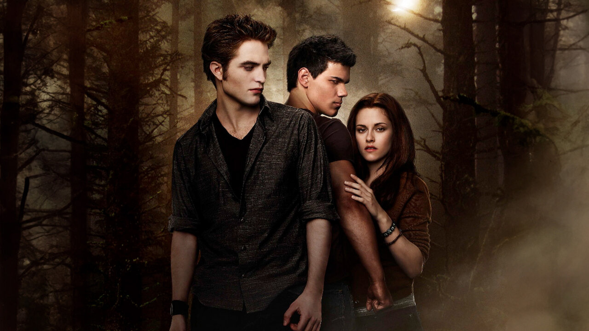
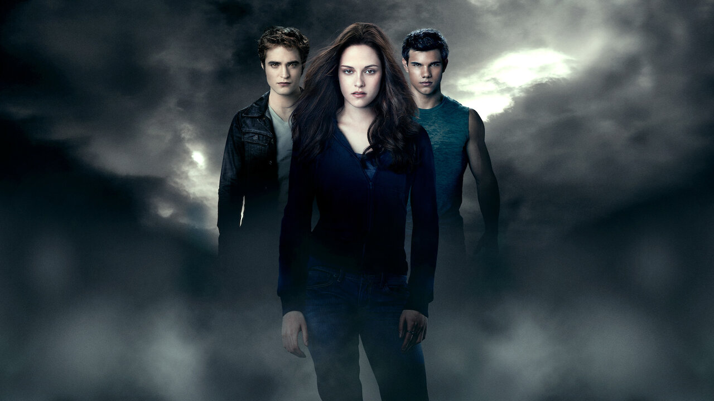

| Pelicula | CREPUSCULO |
|---|---|
| Director | Catherine Hardwicke Bill Condon David Slade Chris Weitz |
| Descripción |
La saga Crepúsculo, en sus libros y películas, narra la historia de Bella Swan, una adolescente humana, y su relación
romántica con Edward Cullen, un vampiro. La trama se centra en este romance no convencional, que genera conflicto con otros vampiros y licántropos, además de explorar temas como el destino, las almas gemelas y los amantes prohibidos. |
| Cronología |
Crepúsculo (2008) Luna nueva (2009) Eclipse (2010) 2010 |
| Imagen |   |